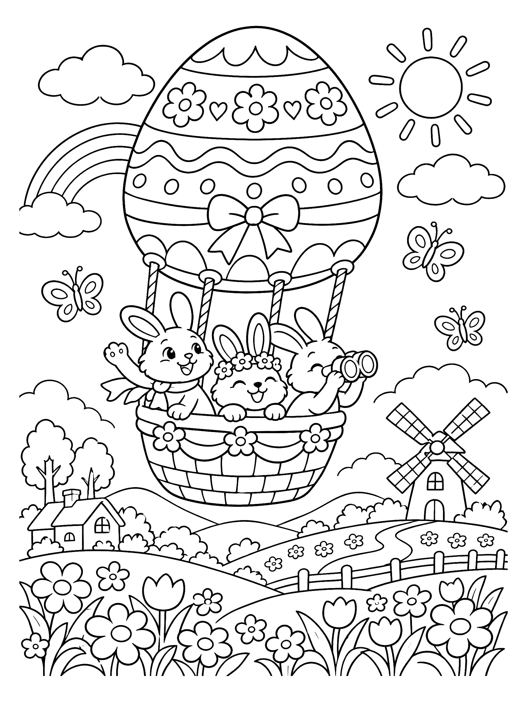
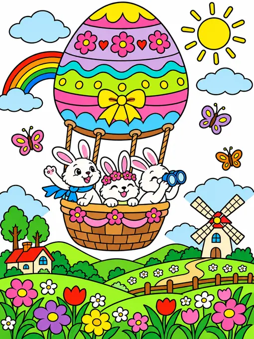

Bunny Hot Air Balloon Coloring Page
Whimsical Free printable · Letter and A4
Bunnies riding an egg-shaped hot air balloon over hills, a windmill and fields of flowers.

Color ideas
Here is one way to color it. Good colors to pull out: brick red, forest green, lime, green, lavender, magenta.
Want this small colored picture printed in the corner of the page as a guide? Open the print options and switch on Color guide.
About this page
A storybook scene with medium detail and plenty to find. Great for kids about 6 to 10.
It prints on one sheet of regular paper. For markers, use heavier paper or put a spare sheet underneath. In the print options you can also print two per sheet, switch to light gray lines, or add a name line.